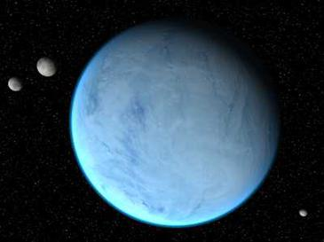
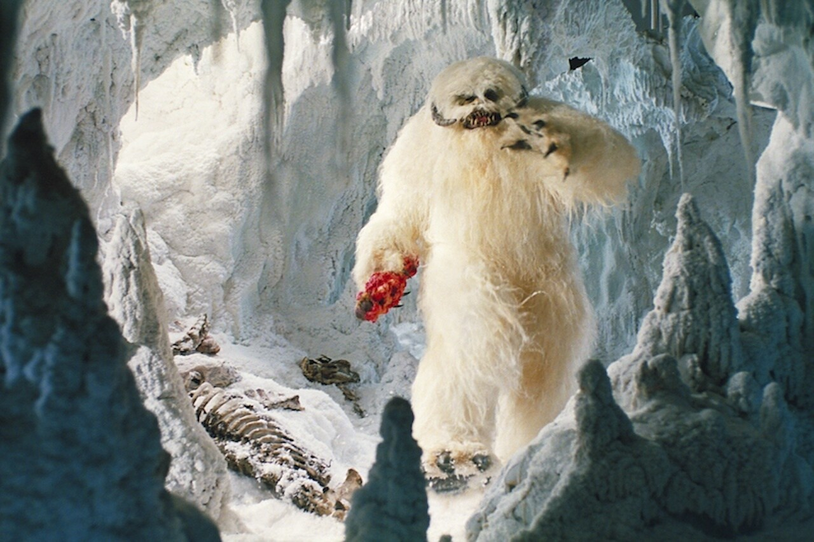
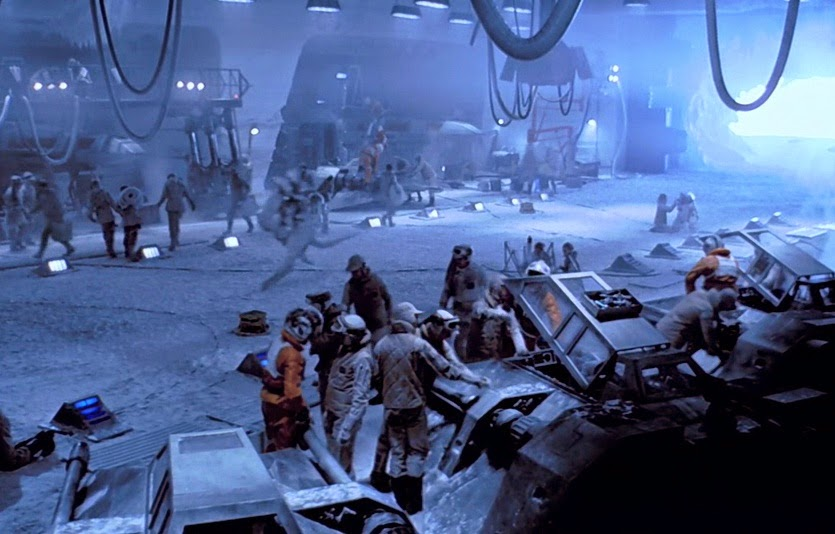

Quand l'Empire découvre la base des opérations rebelles sur Yavin 4, les combattants de la liberté doivent se réfugier dans un nouveau repaire secret. Dans leur quête d'un asile improbable, ils jettent leur dévolu sur le monde froid et désolé de Hoth.
|  |  |  |